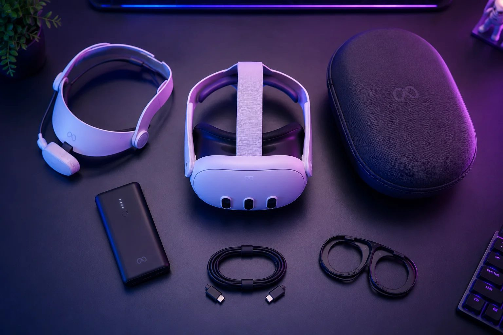

The best Quest 3 accessories (the ones actually worth buying)

Let's open with something most accessory lists won't tell you: the Quest 3 is complete out of the box. Nothing on this page is required on day one — charge it, put it on, play. So this is not one of those "20 must-have accessories" lists that exist to cram in affiliate links. It's the opposite: the short list of purchases that genuinely improve the experience, in the order you should buy them, with an honest note on who each one is for — and, at the end, the things you can happily skip when you're starting out.
First: a battery head strap. If you buy one thing, make it this, because it fixes the headset's two real weaknesses in a single purchase. The soft fabric strap that ships in the box is the flimsiest part of the Quest 3, and the headset is front-heavy; a rigid strap with a battery on the back counterbalances the weight and roughly doubles your playtime, from about two hours to four or five (the full battery story is in our battery guide). The current sweet spot is around $60–80: the BoboVR S3 Pro (~$80) adds a hot-swappable 10,000 mAh pack — snap on a spare mid-session without pausing — plus a small cooling fan, and the KIWI K4 Boost (~$70) is the comfortable classic. Meta's own Elite Strap with Battery exists at $130, but honestly, the third-party options give you more for less. One warning: Quest 2 straps don't fit a Quest 3 — don't reuse an old one. For whom: everyone who plays more than casually. Skip it only if your sessions are genuinely short.
Second — but only if you wear glasses: prescription lens inserts. Custom lenses that snap over the headset's optics so you can ditch your frames entirely: more comfort, full field of view, and they double as a shield for the delicate pancake lenses. Budget snap-ins start around $25, and Meta's official Zenni pair runs about $50. We wrote a whole guide on VR with glasses — including why, if you only wear reading glasses, you probably need nothing at all. For whom: nearsighted or astigmatic regulars. If your eyes are fine, skip to the next one.
Third: a silicone facial interface. The cheapest item here (~$15) and the one people thank you for later. The stock foam padding drinks up sweat and face oil and is a pain to clean; silicone wipes down in seconds. For whom: anyone who plays fitness games or shares the headset with family or friends — for a shared headset it's borderline hygiene equipment. (How to clean the rest of the headset is in the lens care guide.)
Fourth — PC gamers only: a USB 3 Link cable. If you'll plug into a gaming PC for the SteamVR library, a proper USB 3 cable (5 Gbps or better, around three metres) is the stable way in, and third-party ones cost a fraction of Meta's official cable. Everything about that setup lives in our PC connection guide. No gaming PC, no cable — simple.
Fifth: a carrying case. Unglamorous, useful. If the headset ever leaves the house — trips, taking it to a friend's — a rigid case is cheap insurance for a $600 device, and it solves a sneaky problem too: stored in a case, the lenses can't catch direct sunlight, which permanently burns the displays. That alone justifies it.
And here's what you can skip at the start. Gun stocks and rifle mounts: great for a very specific shooter niche, pointless for everyone else. Haptic vests: fun demos, deep prices, shallow game support. Charging docks at boutique prices: a USB-C cable does the same job for free. Extra lens protectors and stick-on covers: the inserts or a case already cover that ground. None of this is junk — it's just not where your first pesos should go.
The verdict, in one line: if you're buying a single accessory, it's the battery strap — nothing else comes close in comfort-per-dollar. Glasses wearers add the inserts; sweaty players and shared households add the silicone interface; PC people add the cable; travelers add the case. And if you don't own a headset yet and landed here doing homework — smart move — the quiz will tell you which one to start with.
Recommended gear
The top two picks from the list, ready for a price check:
Battery head strap → USB 3 Link cable (3 m) →
Answer 7 quick questions and get a personalized match in 60 seconds.
Take the VR Finder quiz →Some links on vr.ar are affiliate links: if you buy through them we may earn a commission at no extra cost to you, which helps keep vr.ar free. Links to Amazon are plain searches and earn us nothing. Prices and specifications are subject to change. See our Privacy Policy.